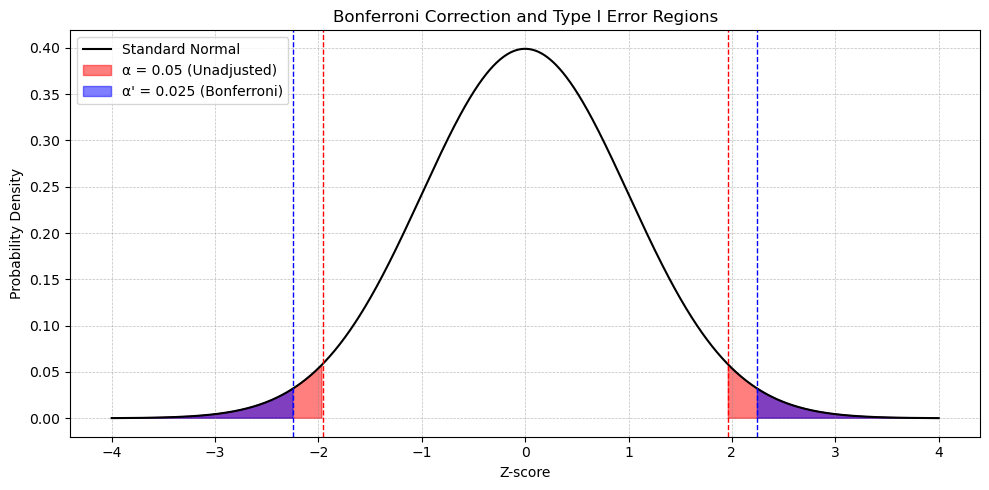

Linear Combinations and the Multiple Comparison Problem
Objectives
Recognize the limitations of the alternative hypothesis in an ANOVA F-test.
Construct and interpret linear combinations of group means.
Understand the need for multiple comparison procedures and when to apply them.
Apply methods such as Bonferroni and Dunnett to test planned and unplanned comparisons.
Fallacies in Hypothesis Testing
False causality: A small p-value does not indicate causation. Causality can only be inferred from randomized experiments, not observational studies.
Accepting the null: We should say there is “no evidence of a difference,” not that the null hypothesis is true. There is not enough evidence to suggest the observed difference is due to anything other than chance.
Statistical vs. practical significance: Statistical significance does not imply practical importance. Evaluate practical significance using power, effect size, and confidence intervals.
Differences that are statistically but not practically significant may arise due to large sample sizes.
If a difference is practically significant but not statistically significant, more data may be needed.
Data dredging: Avoid fishing for significance (data snooping). This can lead to publication bias against negative results.
Good statistics from bad data: Biased or non-random data compromise conclusions. Experimental design determines which inferences and statistical methods are valid.
Linear Combination of Group Means
ANOVA allows only pairwise comparisons of means and does not account for meaningful structure across groups. In practice, you may wish to compare the average of several means to a single group, or to the average of others.
The ANOVA F-test serves as an initial screening tool for detecting any overall differences in means. If the F-test is significant, follow-up tests can be considered.
Linear Contrasts
A linear combination of group means is defined as: \[
\gamma = C_1\mu_1 + C_2\mu_2 + \dots + C_I\mu_I
\] where \(\gamma\) represents the linear combination and the \(C_i\) are coefficients. When the coefficients sum to zero, the combination is called a contrast.
Estimate \(\gamma\) using \(g = C_1\bar{x}_1 + C_2\bar{x}_2 + \dots + C_I\bar{x}_I\), where \(\bar{x}_i\) are group sample means.
The standard error of \(g\), denoted \(SE(g)\), is given by: \[
SE(g) = S_p \sqrt{\frac{C_1^2}{n_1} + \frac{C_2^2}{n_2} + \dots + \frac{C_I^2}{n_I}}
\] where \(S_p\) is the pooled standard deviation.
Even when comparing only two groups (i.e., the other coefficients and terms under the square root are zero), the pooled standard deviation is used under the assumption of equal variances across all groups.
The t-statistic for testing contrasts is: \[
t_{\alpha, df} = \frac{g - \gamma}{SE(g)}
\] where \(g\) is the observed linear combination, \(\gamma\) is the hypothesized value (e.g., \(\gamma = 0\)), and \(df\) is the degrees of freedom associated with \(S_p\).
Steps for a Linear Contrast Test
Summarize the data: Obtain group means, sample sizes, and the pooled standard deviation from the ANOVA model (e.g., RMSE).
Specify the coefficients: Choose \(C_i\) values such that \(\sum C_i = 0\).
Estimate the contrast: Compute the linear combination \(g\) using the sample means and chosen coefficients.
Compute the standard error: Calculate \(SE(g)\) using the formula above.
Construct confidence intervals: \[
CI = g \pm t_{\alpha, df} \cdot SE(g)
\]
Perform the test: Calculate the t-statistic to assess the contrast.
Simultaneous Inferences
When testing multiple contrasts or pairwise comparisons, the risk of a Type I error increases. Adjustments to significance levels or p-values are needed to maintain the overall error rate.
Distinguish between:
Individual confidence level: The probability that a single interval captures its parameter (\(1 - \alpha\)).
Familywise confidence level: The probability that all intervals simultaneously capture their parameters. This probability is less than \(1 - \alpha\) unless corrections are applied.
Common Applications of Linear Contrasts
Comparing average values, e.g., the mean of groups 1 and 2 versus group 3.
Comparing response rates across treatments, such as dietary interventions in animals.
Testing specific hypotheses about structured combinations of group means.
Adjusting for Multiple Comparisons
When conducting multiple tests, it is important to control the familywise error rate (FWER). Common post-hoc procedures are outlined below.
Example: For 4 groups, there are \(\binom{4}{2} = 6\) pairwise comparisons (i.e., 4 choose 2): \[
\alpha' = \frac{0.05}{6} = 0.0083
\]
Strengths: Simple, widely applicable
Weaknesses: Very conservative; reduces power
Tukey’s Honestly Significant Difference (HSD)
Used to construct simultaneous confidence intervals for all pairwise mean differences
Based on the studentized range statistic: \[
q = \frac{\bar{X}_{\text{largest}} - \bar{X}_{\text{smallest}}}{\sqrt{\frac{MSE}{n}}}
\] (for groups with equal \(n\))
Compares each treatment group to a single control group
Uses the \(D\)-statistic: \[
D = d_{(k-1, N-k)} \cdot \sqrt{\frac{2 \cdot MSE}{n_{\text{harmonic}}}}
\]
Degrees of freedom: \[
df = (k - 1, N - k)
\] where \(k - 1\) is the between-groups degrees of freedom and \(N - k\) is the within-groups degrees of freedom
Strengths: Targets control comparisons directly
Weaknesses: Not designed for all pairwise tests and limited to control-versus-treatment tests
Procedures for All Possible Comparisons
Scheffé’s method
Allows for testing any linear combination of means
Used for all possible comparisons, including non-pairwise contrasts
Based on the F-distribution
Strengths: Flexible, ideal for complex non-pairwise hypotheses, and less conservative than Bonferroni
Weaknesses: Less powerful for simple pairwise tests
Key Considerations for Post-Hoc Comparisons
Type I Error Control
Multiple tests increase the chance of a false positive (Type I error).
Even if all null hypotheses are true, testing too many comparisons increases the likelihood of finding a “significant” result by chance.
Post-hoc adjustments help control the overall Type I error rate.
Planned vs. unplanned comparisons
Use planned comparisons when testing specific hypotheses defined in advance.
Use unplanned post-hoc comparisons when no prior hypotheses were made, but the ANOVA is significant.
Decision framework after ANOVA
If the F-statistic is not significant, no further testing is needed. There is no evidence that group means differ.
If the F-statistic is significant, then post-hoc comparisons are appropriate. The choice of follow-up method depends on:
Whether there is meaningful structure in the groups (e.g., contrasts like “average of groups A and B vs. group C”).
Whether pairwise comparisons or structured contrasts best address your research question.
This contrast compares the average of the Amputee and Hearing groups to the average of the Crutch and Wheelchair groups, excluding the None group. The coefficients (weights) are assigned based on the groupings of interest. The group labels are listed alphabetically, which is the default in most statistical software.
Here, \(\gamma\) represents the population value of the contrast—a linear combination of group means. A value of \(\gamma = 0\) would indicate no difference between the two averaged group sets.
Method: Linear Contrast Formulas and Test Statistic
To evaluate this question, we use a linear contrast to compare combined group means.
General definition of a contrast: \[
\gamma = C_1\mu_1 + C_2\mu_2 + \dots + C_I\mu_I
\] where \(C_i\) are the contrast weights and must satisfy the constraint: \[
\sum C_i = 0
\]
Contrast estimate: \[
g = C_1\bar{x}_1 + C_2\bar{x}_2 + \dots + C_I\bar{x}_I
\] where \(C_i\) are the contrast weights and \(\bar{x}_i\) are the sample means.
Standard error: \[
SE(g) = S_p \sqrt{ \frac{C_1^2}{n_1} + \frac{C_2^2}{n_2} + \dots + \frac{C_I^2}{n_I} }
\] where \(S_p = \sqrt{MSE}\) is the pooled standard deviation (assuming equal variances and independent observations).
Test statistic: \[
t = \frac{g - \gamma}{SE(g)}
\] This follows a t-distribution with degrees of freedom: \[
df = N - I
\] where \(N\) is the total number of observations and \(I\) is the number of groups.
Estimate \(\gamma\) with \(g\) using group means: \[
g = 1\bar{x}_{\text{Amp}} - 1\bar{x}_{\text{Crutch}} + 1\bar{x}_{\text{Hear}} + 0\bar{x}_{\text{None}} - 1\bar{x}_{\text{Wheel}}
\]\[
g = (1)(4.43) + (-1)(5.92) + (1)(4.05) + (0)(4.9) + (-1)(5.34) = -2.78
\]
The estimated contrast represents the estimated difference between the sum of the populations means of the Amputee and Hearing groups and the sum of the populations means of of the Crutch and Wheelchair groups.
Interval for the difference of sums: \[
CI = (-4.518, -1.042)
\]
Interval for the difference of means (averaging over 2 vs. 2 groups): \[
CI = \left( \frac{-4.518}{2}, \frac{-1.042}{2} \right) = (-2.259, -0.521)
\]
There is sufficient evidence that the sum of points assigned to the Amputee and Hearing groups is smaller (\(g = -2.8\)) than the sum of points assigned to the Crutch and Wheelchair groups at the \(\alpha = 0.05\) confidence level, because the confidence interval does not contain 0.
Summary of Findings
The initial ANOVA showed a statistically significant difference across all five groups (p = 0.0301).
A targeted contrast comparing the average of the Amputee and Hearing groups to that of the Crutch and Wheelchair groups yielded:
Contrast estimate: \(g = -2.78\)
95% CI for difference of means: \((-2.26, -0.52)\)
\(t(65) = -2.78\), p < 0.01
We conclude that the Amputee and Hearing groups were rated significantly lower, on average, than the Crutch and Wheelchair groups. )
There is strong evidence to suggest that the sum of the means of the Amputee and Hearing groups is less than that of the Crutch and Wheelchair groups (p-value = 0.0022). The 95% confidence interval for the difference of sums is \((-4.529, -1.043)\) points.
Standard error: \[
SE(g) = \sqrt{2.6666 \left( \frac{(0.5)^2}{14} + \frac{(-0.5)^2}{14} + \frac{(0.5)^2}{14} + \frac{0^2}{14} + \frac{(-0.5)^2}{14} \right)} = \sqrt{0.1905} = 0.4364
\]Test statistic: \[
g = -1.393 \quad \Rightarrow \quad t = \frac{g - \gamma}{SE(g)} = \frac{g - 0}{SE(g)} = \frac{-1.393}{0.4364} = -3.19
\] Same \(t\)-statistic as for sums, but different \(g\) because the 0.5 vs. 1 and different SE.
p-value: \(p = 0.0022\)
Decision: Reject \(H_0\)
Conclusion:
There is strong evidence to suggest that the average of the means of the Amputee and Hearing groups is less than that of the Crutch and Wheelchair groups (p-value = 0.0022). The 95% confidence interval for the difference in means is (-2.26, -0.52) points.
Note: This is based on means, not sums.
Final Conclusion (Client-Facing—Difference in Group Means)
There is strong evidence to suggest that the average of the means of the Amputee and Hearing groups is less than the average of the means of the Crutches and Wheelchair groups (p-value = 0.0022).
We are 95% confident that the average of the mean scores of the Crutches and Wheelchair groups is between 0.5215 and 2.2605 points greater than the average of the mean points of the Amputee and Hearing groups.
Why We Do a Multiple Comparison Correction — The Bonferroni
Motivation
When conducting multiple hypothesis tests, the probability of making at least one Type I error (a false positive, rejecting \(H_0\) when \(H_0\) is true) increases. Bonferroni correction helps control this overall risk by adjusting the significance level for individual tests.
Getting at least one head = at least one Type I error
Just like the probability of getting at least one head increases with more coin flips, the probability of making at least one Type I error increases with more hypothesis tests — unless we adjust for it.
This illustrates how running multiple independent tests increases the probability of rejecting at least one true null—even if all nulls are actually true. That’s why corrections like the Bonferroni adjustment are necessary.
Familywise Error Rate With Multiple Tests
Let \(K = 2\) (number of independent hypothesis tests), and assume the null hypothesis is true in both.
TIE = Type I error
FTR = Fail to reject \(H_0\)
Probability of at Least One Type I Error Without Correction
\[
P(\text{at least 1 TIE in 2 tests}) = 1 - P(\text{no TIE in 2 tests}) = 1-P(\text{FTR in 2 tests})
\]
\(\alpha\) is the desired familywise error rate (e.g., 0.05).
\(k\) is the number of comparisons.
\(\alpha'\) is the adjusted threshold for each test, the per-comparison significance level.
Then the familywise error becomes:
\[
P(\text{at least 1 TIE in 2 tests}) = 1 - P(\text{no TIE in 2 tests}) = 1 - P(\text{FTR})^2 = 1 - (1 - \alpha')^2 = 1 - (0.975)^2 = 0.0494
\]
So Bonferroni successfully lowers the overall chance of making a Type I error across all tests back to the desired 0.05 level.
Interpreting the Diagram

Bell curve showing original \(\alpha\) and Bonferroni-corrected rejection regions. The Bonferroni-adjusted regions lie farther from 0, reflecting the more stringent critical values.
The shaded areas represent rejection regions under two scenarios:
Outer shaded tails: Original \(\alpha = 0.05\) rejection regions (2.5% in each tail)
Inner shaded tails: Bonferroni-adjusted \(\alpha' = 0.025\) rejection regions (1.25% in each tail)
The critical value for Bonferroni (CVB) is the \(t\)- or \(z\)-value that corresponds to \(\alpha'\), which lies further from 0 than the uncorrected critical value. This makes it harder to reject \(H_0\).
Key Concepts Illustrated
Without correction: \[
P(\text{at least one TIE}) = 1 - (1 - \alpha)^K = 1 - (0.95)^2 = 0.0975
\]
With Bonferroni correction: \[
\alpha' = \frac{0.05}{2} = 0.025 \quad \Rightarrow \quad P(\text{at least one TIE}) = 1 - (0.975)^2 = 0.0494
\]
CVB (critical value for Bonferroni) moves farther from 0, tightening the rejection region.
Bonferroni maintains a familywise error rate at or below 0.05.
Summary
When we conduct multiple comparisons, the overall Type I error rate is inflated.
The Bonferroni correction addresses this by adjusting the per-comparison significance level: \[
\alpha' = \frac{\alpha}{K}
\]
Pros:
Simple and widely applicable
Works for any number of tests
Makes no assumptions about the test structure
Can be applied directly to p-values
Cons:
Can be overly conservative
Reduces power, making it harder to reject \(H_0\)
Multiple Comparison Procedures — Handicap Study
We now explore multiple comparison questions using the Handicap study data. These comparisons build on the need for error rate control, such as the Bonferroni adjustment, after identifying overall group differences.
Questions of Interest (QOIs)
Are any pairs of group means different?
Does the Amputee group have a different mean score than the None group?
Which specific pairs of groups differ?
Do the means of the four Handicap groups differ from the Non-Handicap (None) group?
Each of these questions involves multiple comparisons and may require adjustment for familywise error rates.
QOI 1: Are Any Group Means Different?
We begin with an overall test to determine if there are any mean differences across the five groups. This involves an ANOVA and is the first step in any further group comparisons.
Assumptions:
Normality
Equal variances (e.g., visual checks and Brown–Forsythe test)
Independence (assumed from study design)
Hypotheses: \[
H_0: \mu_1 = \mu_2 = \dots = \mu_5 \quad \text{(All group means are equal)}
\]\[
H_A: \text{At least two group means differ}
\]
Critical value: \(F_{\alpha, 4, 65}\)
ANOVA test statistic (\(F\)-statistic): \(F = 2.85\)
p-value: \(p = 0.0301\)
Decision: Reject \(H_0\) (needle in the haystack)
Conclusion: There is sufficient evidence at \(\alpha = 0.05\) to conclude that at least two group means differ (\(p = 0.0301\), from a standard ANOVA).
Since the omnibus ANOVA test is significant, we proceed to investigate which group differences are driving the result. Multiple comparison procedures will be necessary to identify specific contrasts.
Model fitting R code (for context):
Code
fit <-aov(Score ~ Handicap, data = Handicap)
QOI 2: Does the Amputee Group Differ from the None Group?
We now test whether the mean score for the Amputee group differs from that of the None group.
This contrast was identified before looking at the data (i.e., a planned comparison), so we do not need to apply a multiple comparison correction.
Use the pooled standard deviation from the full model
Conduct the planned contrast within the global ANOVA model
Critical value: $F_{, 4, 65}
\(F\)-statistic with extended degrees of freedom: \(df = 65\)
\(p\)-value: 0.4477
Conclusion:
Decision: Fail to reject \(H_0\)
Interpretation: There is not sufficient evidence to suggest that the mean rating of the Amputee group is different from the None group (p = 0.4477 from a contrast using all the data).
QOI 3: Which Specific Pairs of Groups Differ?
We now explore whether there is evidence that any specific pair of group means differ. These are not planned comparisons, so we must adjust for the increased chance of Type I error due to multiple testing.
There are 5 groups, which gives \(K = \binom{5}{2} = 10\) pairwise comparisons.
Without correction, the risk of at least one false positive (rejecting \(H_0\) when it is true) increases.
The Bonferroni correction provides a simple solution by adjusting the significance threshold.
Unadjusted Procedure
Compare each group pair using pairwise comparisons without correction:
Code
proc glm data=Handicap;
class Handicap;
model Score = Handicap;
means Handicap / hovtest=bf;
ls means Handicap / pdiff;
run;
Compare each pair’s raw p-value to \(\alpha = 0.05\)
Inflated Type I error risk due to multiple tests
Bonferroni Adjustment and Procedure:
To control the familywise error rate, adjust \(\alpha\) using the Bonferroni correction:
Use Bonferroni-adjusted confidence intervals and p-values to control the error rate across the family of comparisons.
The Bonferroni-adjusted analysis in SAS uses the adjust=bon option:
Code
proc glm data=Handicap;
class Handicap;
model Score = Handicap;
means Handicap / hovtest=bf;
ls means Handicap / pdiff adjust=bon cl; *cl = confidence level;
run;
The cl option provides Bonferroni-adjusted confidence intervals.
These intervals are wider because:
\(\alpha\)’ is smaller than \(\alpha\).
The critical value is larger.
The multiplier increases.
Wider intervals result from a more conservative correction.
The cldiff option gives both directions (e.g., \(A - B\) and \(B - A\)).
Each p-value is multiplied by \(K\) before comparison to the original \(\alpha\): \[
K \cdot p_{\text{adj}} \leq \alpha
\]
Interpretation:
This procedure protects against Type I error across the entire family of tests.
It is conservative but appropriate when many unplanned comparisons are being made.
Conclusion:
After applying the Bonferroni adjustment,only 1 of the 10 tests produced a statistically significant result. Therefore, there is evidence (p-value = 0.0035 from a t-test) that the Crutches and Hearing groups have different mean ratings. A 95% Bonferroni-adjusted confidence interval for the difference in means between the Crutches and Hearing groups is \((0.0779,\ 3.6649)\).
QOI 4: Do the Means of the Four Handicap Groups Differ from the Non-Handicap (None) Group?
Assume we are interested in testing whether the means of the four handicap groups differ from the mean of the non-handicap group (i.e., the None group).
Use Dunnett’s procedure because we are comparing the control group (None) to all the others — a pairwise set of dependent comparisons (repeating the control group).
Option 1: Dunnett-adjusted confidence intervals
Specify the control group on the right side using dunnett('None')
Also provides Dunnett-corrected confidence intervals
Code
proc glm data=Handicap;
class Handicap;
model Score = Handicap;
means Handicap / hovtest=bf dunnett('None');
run;
Option 2: Dunnett-adjusted p-values only
Use control('None') to specify the control group
Provides Dunnett-adjusted p-values for all pairwise comparisons with the None group
Code
proc glm data=Handicap;
class Handicap;
model Score = Handicap;
ls means Handicap / pdiff=control('None');
run;